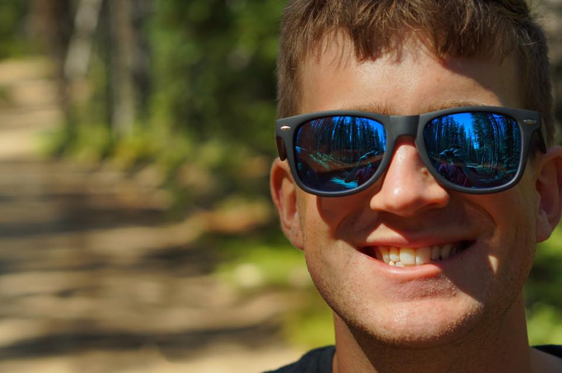

About Me

Hello World! My name is Alec Jandorek and I am a aspiring Web Developer. I was born and raised in Stamford, CT until I shipped of to school at Bryant University in Smithfield, RI. While at Bryant, I majored in Marketing with a dual minor in Computer Information Systems and Communications. After I graduated in the Spring of 2014 I packed my bags and headed down to Austin, TX where I currently reside.
When I am not working or learning to code you can find me all around town. I am an avid cycler and try to get out on my bike as often as I can. I also love playing intramural sports (Mostly softball and flag football). I am also an avid New York sports fan (Go Mets and Jets!) and you can find me watching them hopefully win most of the time. Well that is a bit about me. If you would like to learn more or are interested in working with me please do not hesitate to get in touch!